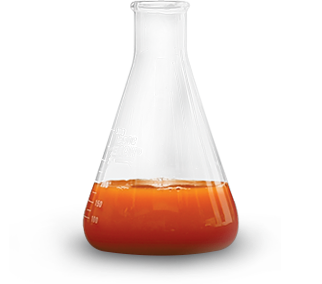
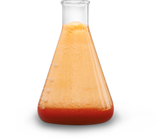
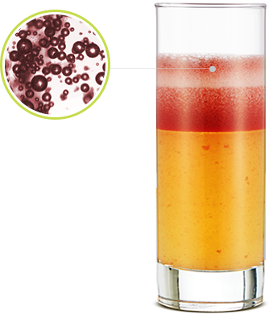
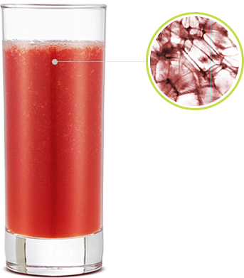

* 시료의 재배 시기 및 종류, 저장방법 등 다양한 조건에 따라 같은 시료라도 반응이 달라질 수 있습니다.
휴롬주스는 효소가 살아있습니다.
휴롬주스는 신선하고 영양이 살아있습니다.
휴롬주스는 영양
흡수율을 높여줍니다.
휴롬주스는 맛과 향이 살아있습니다.
휴롬주스는 건강한
'천연'주스입니다.
살아있는 효소
1. 살아있는 효소
열 방생을 줄여주어 휴롬주스는 효소가 살아있습니다.
휴롬은 천천히 압착해 즙을 짜는 방식으로 마찰로 인한 열 발생을 줄일 수 있어서 열에 의해 파괴되기 쉬운 효소를 충분히 섭취할 수 있습니다.
살아있는효소 (항산화 반응)

가열한 주스
열에 의해 효소가 파괴되어 항산화 반응이 없음

가열하지 않은 휴롬주스
효소가 살아있어 활발히 나타나는 항산화 반응
* 시료의 재배 시기 및 종류, 저장방법 등 다양한 조건에 따라 같은 시료라도 반응이 달라질 수 있습니다. (휴롬바이오식품연구소/2014)
휴롬주스에 살아있는 항산화 효소는 질병을 일으키는 유해한 성분을 제거해 줍니다.
휴롬주스에 과산화수소를 넣으면 빠르게 거품이
발생합니다. 이 거품은 세포를 손상시키는 활성산소인
과산화수소가 물과 산소로 분해되는 과정입니다.
즉 거품은 효소가 살아있다는 증거 입니다. 휴롬주스에
살아 있는 효소는 이 과정을 촉진하여 몸에 해로운 물질을
제거해줍니다. 하지만 가열하여 효소가 파괴된 주스는
이러한 효과를 나타내지 못합니다. (60℃ 이상의 온도에서
1분 이상 가열 시 과산화수소와의 반응이 나타나지
않습니다. 과산화수소수의 양을 주스의 10%를
첨가하였습니다. )
산화반응을 줄임
2. 산화반응을 줄임
산화를 줄여주는 착즙으로 휴롬주스는 신선하고 영양이 풍부합니다.
휴롬은 주스를 만드는 과정에서 공깁방울이 잘 섞이지 않아 산화로 인해 맛과 영양이 변질되는 현상을 줄여줍니다.

고속 회전으로 만든 토마토주스 5분 경과 후
고속으로 회전하는 과정에서 세포벽이 파괴되고 다량의공기가 유입되어 과일, 채소의 단면적이 공기와 맞닿아 산화되면서 재료의 색이 변하고 영양소 손실이 발생하는 것은 물론 거품이 가득해 주스의 맛이 떨어질 수 있습니다.

휴롬으로 만든 토마토주스 5분 경과 후
휴롬주스는 만드는 과정에서 세포벽 파괴와 산소와의 접촉을 줄여 자연의 신선함을 오래 지켜줍니다.
출처 : Kim MJ, Kim JI. Kang MJ, et al. Quality evaluatiom of fresh tomato juices prepared using high speed centrifugal and low-speeds masticating household juicers, Food Sci. Biotechnol.2015
시료의 재배 시기 및 종류, 저장방법 등 다양한 조건에 따라 같은 시료라도 반응이 달라질 수 있습니다.